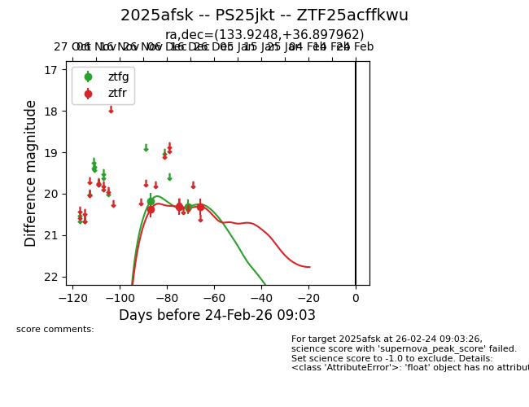
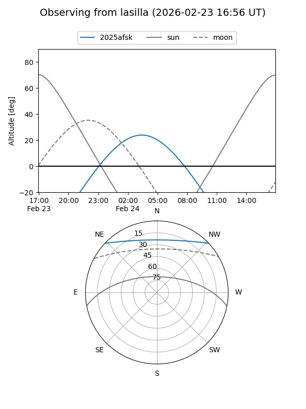
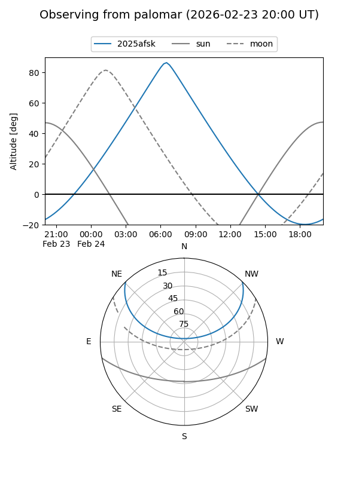
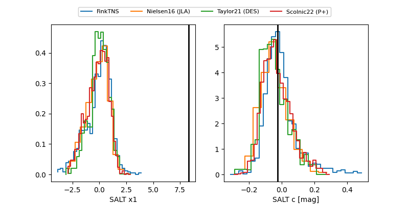

2025afsk
Target 2025afsk at 2025-12-29 18:53
Aliases and brokers:
FINK: fink-portal.org/ZTF25acffkwu
Lasair: lasair-ztf.lsst.ac.uk/objects/ZTF25acffkwu
ALeRCE: alerce.online/object/ZTF25acffkwu
TNS: wis-tns.org/object/2025afsk
YSE: ziggy.ucolick.org/yse/transient_detail/2025afsk
alt names
ZTF25acffkwu (ztf,fink_ztf)
2025afsk (tns,yse)
PS25jkt (panstarrs)
Coordinates:
equatorial (ra, dec) = 133.9248,+36.89796
equatorial (HMS+DMS) = 08:55:41.96,+36:53:52.66
galactic (l, b) = (186.1219,+39.86881)
Flags:
Photometry:
last ztfg=20.32, ztfr=20.31
2 ztfg, 3 ztfr detections
Lightcurve

Visibility


Additional plots
